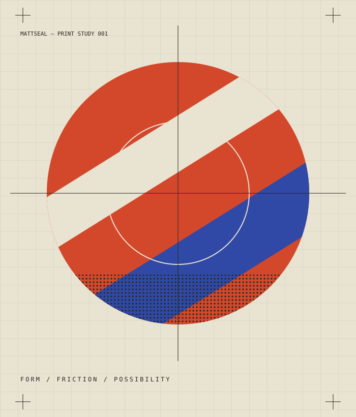

Just because we can.
Should we?
Making something possible is one kind of progress. Deciding whether it belongs is another. I'm interested in the space between the two.

I'm Matt, a product designer interested in design, technology, culture, and the creative process. This is where I follow the interesting bits.
Creative prototype. All editorial copy is provisional; the curiosity is the point.
Start anywhereQuestions from the messy middle of design, tools, and making things.
Draft fragments / Not published articlesMaking something possible is one kind of progress. Deciding whether it belongs is another. I'm interested in the space between the two.
When the distance between an idea and a prototype shrinks, what deserves more of our attention? Maybe the question we started with.
Two print layers. One shifting boundary. A small study in how a change of perspective changes the picture.
Move the slider to uncover the second composition. Look for the moment the shapes stop agreeing.
Working interaction / Provisional art directionDrag the slider · use arrow keys for finer adjustments
A space for the references that linger.
These are draft collection prompts, ready to be replaced with actual finds.
Letterforms, awkward spacing, and the confidence of a very big word.
A future home for records, strange sounds, and a change of tempo.
Colors and compositions found outside the rectangle of a screen.
Matthew Kearney. Product designer, curious human.
This is my space to try things and think out loud.